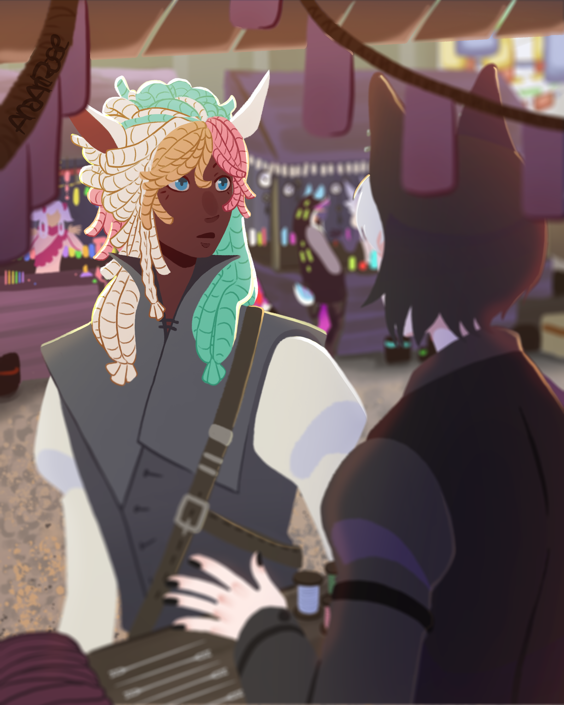

Greetings and Salutations from the otherside! The name is Kilihana Duong (I dare you to pronounce it) but you can call me Ana for short. I'm currently enrolled in Seminole State College for my A.A Degree on my BFA Emerging Media Pathway hoping to get my artistic abilities, story telling, and characters out onto the big screen for all to see and enjoy! For as long as I can remember, I've always doodled anywhere I can find an empty space but I didn't get serious until my late high school years where I've started to study art and focus on other things such as photography, animation, and coding. Just dipping my toes into the different pools of exploration has helped me find something to pursue; and with school I'm able to try and make the dream I want, the dream to see my creations come to life, a reality.
As of now, I have a to-do list of things I want to do next for a creative project where it's either making a game, practicing a diferent art style, making a comic, or even knitting just to get the things I want to do or try done. My current creative project as of now, just purely for the fun of it, is creating a modification in a game. I've personally never programmed in my life nor done something as extraneous as modifying a game, but it's proving to be a lot of fun!
Skills I've yet to learn/improve on.
Below are some work examples from both school assignments and personal works where I've done it myself or implemented things from school into the projects.


(This character was created from a dream and was later used for the school assignment above.)


